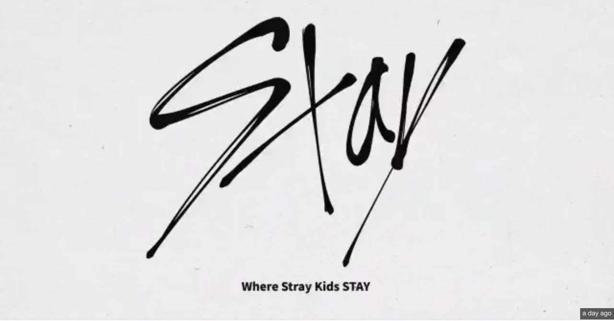

El fandom del grupo de K-pop Stray Kids se llama STAY. El nombre se obtiene quitando la letra "r" de "Stray". En español, "stay" significa "quédate". El grupo anunció el nombre de su fandom en un video el 1 de agosto, junto con la frase "Where Stray Kids STAY". El nombre del fandom tiene un significado especial: gracias a STAY, Stray Kids pueden dejar de "vagar" y quedarse para hacer su música. El eslogan secundario del grupo es "You make Stray Kids stay".
